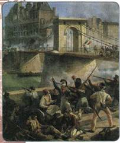
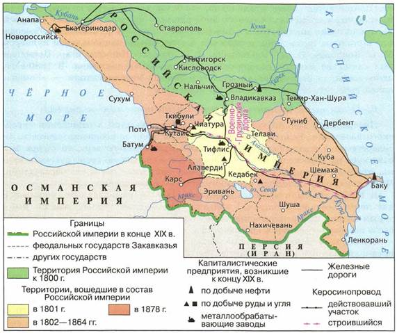
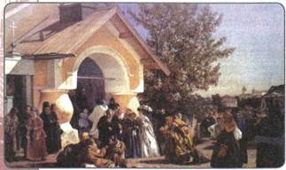

Материал для самостоятельной работы и проектной деятельности учащихся
В чём состояли особенности национальной политики при Александре II?
1. Европейские революции 1848—1849 гг. и Россия
Одним из последствий эпохи Просвещения стало стремительное формирование в европейских странах национальной идеи. Французская революция конца XVIII в. впервые соединила идею нации с политикой. Эти идеи в начале XIX в. стали особенно популярны у национальных меньшинств в многонациональных странах и в колониях. Здесь оформлялись национальные движения, ратовавшие за национальное освобождение, сохранение традиций и обычаев своего народа, родного языка и культуры.
Мощные греческие восстания против турецкого господства привели к провозглашению независимости Греции в 1832 г. Восстание хорватов против венгерского влияния в 1848 г. было подавлено. Тогда же произошло выступление ирландцев против британского господства. Крупнейшим было восстание 1848— 1849 гг. в Венгерском королевстве и последующие, приведшие к федерализации Австрийской империи и образованию Австро-Венгрии в 1868 г. Многолетнее национально-освободительное движение итальянского народа против австрийского господства закончилось объединением Италии в 1870 г. Рост национального самосознания немцев привёл к образованию сначала Прусского союза в 1849 г., а затем единой Германской империи в 1871 г.

Во время революции во Франции. Фрагмент. Художник А. Буржуа
Таким образом, национальный вопрос стал одним из самых острых политических вопросов в Европе. Но он имел не только свою прогрессивную сторону, выразившуюся в стремлении народов к преодолению национального гнёта. Другой его стороной было формирование идеологии национализма, в которой нация признаёт за собой исключительные права и способности, превосходство над другими народами.
2. Восстание в Царстве Польском в 1863—1864 гг.
Сходные явления не могли не затронуть многонациональную Российскую империю. Здесь наиболее острое положение сложилось в традиционно неспокойном регионе — Царстве Польском. Либеральные реформы Александра II возродили стремления польского дворянства к получению независимости.
В Царстве Польском сложились тайные организации; современники разделили их на два типа — «красные» и «белые». «Красные» опирались на революционно настроенную городскую молодёжь. Они ставили перед собой задачу связать борьбу за освобождение Польши с борьбой за интересы крестьянства, предлагая отменить оброк и барщину и наделить крестьян землёй без выкупа. Партия «белых» (помещики, крупная буржуазия) была против постановки крестьянского вопроса. Обе партии выступали за восстановление Польши в границах 1772 г.
С 1862 г. польским наместником был великий князь Константин Николаевич. Начальником гражданского управления Польши был назначен известный либерал маркиз А. Велепольский, сторонник восстановления в Царстве Польском конституции 1815 г. Но антирусские настроения в польском обществе были столь сильны, что ни «белых», ни «красных» не удовлетворяла умеренная национальная программа маркиза. Борясь с крайними взглядами, Велепольский закрыл Земледельческое общество, состоявшее из дворян — сторонников независимости Польши. В то же время он решил при помощи специального рекрутского набора, объявленного только в городах, призвать на военную службу революционную молодёжь. Попытка осуществить эту меру в Варшаве вылилась в открытое вооружённое восстание, которое вспыхнуло в январе 1863 г. Национальный комитет «красных» объявил себя временным правительством и издал законы, провозглашавшие крестьян собственниками своих наделов. Государство обязывалось выплатить помещикам стоимость утраченных земель.
Борьба сторонников «белых» и «красных» в новом правительстве, отсутствие единой чёткой цели и слаженных действий привели к поражению восстания. К маю 1864 г. восстание в Царстве Польском было окончательно подавлено.
Этому в немалой степени способствовало и то обстоятельство, что правительство Александра II сумело отвлечь от восстания подавляющую часть крестьян, узаконив реформы, разработанные повстанцами. Земля, находившаяся в пользовании крестьян, становилась их собственностью. Часть безземельных крестьян получала небольшие наделы за выкуп. По поручению Александра II аграрную реформу в Польше проводил Н. А. Милютин.
После подавления восстания были ликвидированы последние следы автономии Польши, а название Царство Польское было заменено термином Привислинский край. Для укрепления своих позиций правительство стало назначать на административные, педагогические, церковные должности русские кадры, польские дворяне были лишены права избирать предводителей дворянства, теперь их назначали в Петербурге. Полякам-католикам было запрещено покупать и арендовать земли в девяти западных губерниях.
3. Преобразования в Финляндии
Стремясь не допустить повторения в Финляндии польского варианта, правительство пошло на опережающие шаги. В 1863 г., с началом Польского восстания, был созван сейм, который при Николае I собирался не систематически. На нём были установлены сроки последующих созывов сейма. Ликвидировался церковный контроль над образованием, вводилось обучение на финском языке.
В 1878 г. были созданы особые финские стрелковые батальоны. Они находились в подчинении местного генерал-губернатора. Эти войска комплектовались только уроженцами Великого княжества Финляндского, имели собственные уставы.
Таможня Финляндии контролировала торговлю не только с зарубежными странами, но и с российскими губерниями. В 1860—1878 гг. Великое княжество Финляндское получило свою денежную систему. Доходы княжества не вливались в общеимперскую казну.
4. Политика России на Кавказе
В правление Александра II на Кавказе продолжалась затяжная и кровопролитная Кавказская война.
Вспомните, когда и при каких обстоятельствах началась Кавказская война.
На присоединённых к России землях строились крепости, возводились укреплённые линии, сюда привлекались поселенцы (в большинстве своём казаки) для охраны региона и освоения новых земель. Ещё в 1832 г. на Северном Кавказе было создано Кавказское линейное казачье войско. В 1860 г. оно было разделено на Кубанское и Терское казачьи войска, которые имели свои особенности в управлении.
Военный министр Д. А. Милютин сформулировал особенности политики правительства в этом сложном регионе. Он считал необходимым оставить в неприкосновенности религию, обычаи, образ жизни народов Кавказа: «Мы должны всеми силами стараться согласовывать наше владычество с интересами самих горцев, как материальными, так и нравственными».
5. Положение в западных губерниях
Во второй половине XIX в. украинские земли входили в состав Киевского генерал-губернаторства, белорусские — в состав Северо-Западного генерал-губернаторства.
Крестьянская реформа на этих землях была проведена в 1863 г. Крестьяне Виленской, Ковенской, Гродненской, Минской, Могилёвской, Витебской, Киевской, Подольской и Волынской губерний были переведены на обязательный выкуп, им возвратили отрезанные от их наделов земли, барщина и оброк были снижены на 20 %.

Кавказ в XIX в.
Атмосфера либеральных реформ, предпринимаемых Александром II, способствовала возникновению национальных движений и в западных губерниях. Центрами этих движений были учебные заведения, их участниками — учащаяся молодёжь, интеллигенция. Но если в отношении Финляндии, прибалтийских и польских губерний правительство допускало определённые национальные послабления, то по отношению к белорусам и малороссам этого не делалось. В них правительство видело «исконную и живую часть русского народа».
В 1860-е гг. в Киеве, Харькове, Полтаве, Чернигове и других городах возникли культурно-просветительские организации — громады. Они легально и нелегально издавали литературу на украинском языке, организовывали воскресные школы, собирали фольклорные произведения и т. п.
Формирование национального самосознания белорусского народа происходило в условиях конфликта между православной и католической церковью, причём представители обеих утверждали, что белорусы являются не самостоятельным народом, а частью польского либо русского народа. Поскольку белорусы не имели своих институтов и университетов, они получали высшее образование в столице. Здесь жили и работали исследователи национальной культуры М. О. Коялович, П. А. Гильтебрант, В. И. Эпимах-Шипилло и др. Петербург был одним из центров белорусского национального движения. В 1880-е гг. здесь возникла первая организация белорусской интеллигенции — «Гомон», начал выходить журнал с таким же названием.
6. Политика правительства по отношению к евреям
Либеральные веяния коснулись и политики властей в отношении еврейского населения. Если раньше основным средством приобщения евреев к государственной жизни было их крещение в православную веру, то теперь был взят курс на «просвещение», т. е. внедрение в еврейскую среду русского языка, отказ от традиционного образа жизни, получение светского образования. Часть еврейской молодёжи откликнулась на новые веяния.
В 1860-е гг. были введены различные льготы, разрешавшие проживание вне черты оседлости купцам I гильдии, обладателям учёных званий, некоторым категориям ремесленников. На территории Царства Польского евреям было разрешено селиться повсеместно и приобретать недвижимость.
Эти меры дали положительные результаты. Появилась прослойка еврейских предпринимателей и аристократов. Среди евреев возросло число представителей творческой интеллигенции, инженеров. Но всё же число евреев, усвоивших русскую культуру, оставалось сравнительно небольшим. На них продолжали распространяться различные ограничения, в частности запрет на занятие государственных и правительственных должностей. Еврейское представительство в органах управления было ограничено городовым положением 1870 г. В 1873 г. были закрыты государственные школы, созданные для евреев ещё в 1844 г. На правительственную политику в еврейском вопросе оказывали влияние монархические издания, которые вели антисемитскую пропаганду.
7. Власть и церковь в период Великих реформ
Либеральные преобразования затронули и Русскую православную церковь. Прежде всего правительство попыталось улучшить материальное положение священнослужителей. В 1862 г. было создано Особое присутствие по изысканию способов улучшения быта духовенства, в которое вошли члены Синода и высшие должностные лица государства. К решению этой проблемы были привлечены и общественные силы. В 1864 г. возникли приходские попечительства, состоявшие из прихожан, которые не только заведовали делами прихода, но и должны были содействовать улучшению материального положения духовных лиц. В 1869—1879 гг. доходы приходских священников значительно увеличились за счет упразднения мелких приходов и установления годового жалованья, которое составляло от 240 до 400 рублей. Для священнослужителей были введены пенсии по старости.

Выход из церкви. Художник А. И. Морозов
Либеральный дух реформ, проводимых в сфере просвещения, коснулся и церковных учебных заведений. В 1863 г. выпускники учебных заведений, готовивших духовенство (духовные семинарии), получили право поступать в университеты. В 1864 г. детям духовенства было разрешено поступать в гимназии, а в 1866 г. — в военные училища. В 1867 г. Синод принял решение о ликвидации наследственности приходов и о праве поступления в семинарии всех без исключения православных. Эти меры разрушали сословные перегородки, способствовали демократическому обновлению духовенства. Одновременно они привели к уходу из этой среды множества молодых одарённых людей, пополнивших ряды интеллигенции.
В 1860—1870-е гг. в разных уголках России и мира действовали духовные миссии Русской православной церкви — на Алтае, на Аляске, в Китае, Японии, Корее, Персии, Иерусалиме. Русская церковь принесла православие в Северную Америку.
Вспомните, кто такие старообрядцы.
При Александре II произошло юридическое признание старообрядцев: им разрешили регистрировать свои браки и крещения в гражданских учреждениях; они могли теперь занимать некоторые (но не всякие) общественные должности, свободно выезжать за границу. В то же время во всех официальных документах приверженцы старообрядчества по-прежнему именовались раскольниками, им было запрещено занимать государственные должности.
Важнейшим событием стало издание в 1876 г. Синодального перевода Библии, предпринятое при активном участии митрополита Филарета. К подготовке перевода Библии на русский язык приступали ещё в правление Александра I, когда было образовано Русское библейское общество. Однако осуществить эту задачу удалось только в 1870-е гг. Был подготовлен общедоступный текст, понятный широким слоям общества, не знакомым с церковнославянским языком. В издании было указано, что оно печатается «по благословению Святейшего Синода», и поэтому перевод получил название Синодального.
ПОДВЕДЁМ ИТОГИ
Правительство Александра II проводило избирательную национальную политику. Но избирательность эта проявлялась лишь в выборе различных методов для сохранения единой и неделимой Российской империи.
Вопросы и задания для работы с текстом параграфа
1. Что представлял собой национальный вопрос в Европе во второй половине XIX в.? 2. Каковы были цели Польского восстания 1863—1864 гг.? Удалось ли их достичь? Чем завершилось восстание? 3. Для чего на кавказских приграничных землях были образованы казачьи войска? 4. Что такое западные губернии? Назовите их основные центры. Какие особенности имела политика правительства в этом регионе в 1860—1870-е гг.?
Думаем, сравниваем, размышляем
1. Как восстание поляков в Российской империи повлияло на политику центральной власти на территории бывшего Царства Польского? 2. Подготовьте презентацию на тему «Национальности в России во второй половине XIX в.» с использованием фотографий XIX в. 3. В чём состояла сложность при управлении кавказскими землями? 4. Чем окончилась Кавказская война? 5. Что такое Синодальный перевод Библии? Какое значение имел перевод Библии на общедоступный язык? 6. Привлекая дополнительную литературу и Интернет, соберите информацию об одном из исторических деятелей, упомянутых в параграфе.